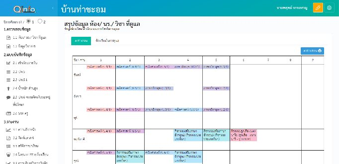
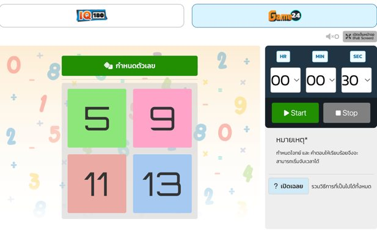
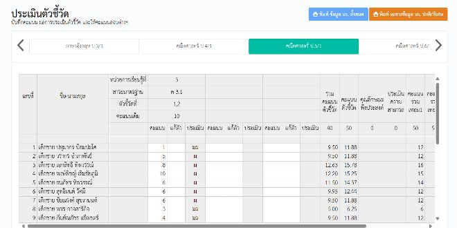
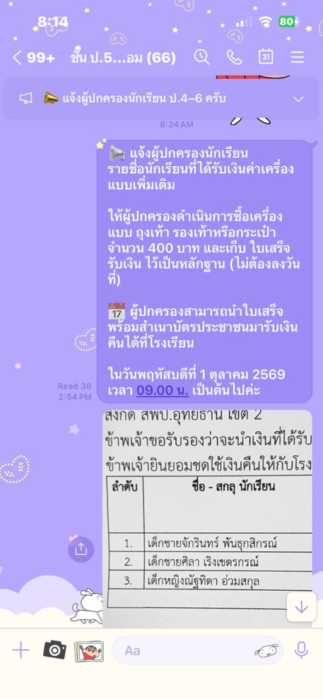

ด้านการส่งเสริมและสนับสนุนการจัดการเรียนรู้
ลักษณะงานครอบคลุมการจัดทำข้อมูลสารสนเทศของผู้เรียนและรายวิชา การดำเนินการตามระบบดูแลช่วยเหลือผู้เรียน การปฏิบัติงานวิชาการและงานอื่น ๆ ของสถานศึกษา และการประสานความร่วมมือกับผู้ปกครอง ภาคีเครือข่าย และหรือสถานประกอบการ
16 คะแนน · 4 ตัวชี้วัดย่อยจัดทำข้อมูลสารสนเทศของผู้เรียนและรายวิชา
จัดทำข้อมูลสารสนเทศรายวิชาคณิตศาสตร์ ชั้นประถมศึกษาปีที่ ๕ โดยใช้โปรแกรม Q-info ในการจัดเก็บข้อมูล สรุปในรูปแบบกราฟแท่ง และรายงานผลสะท้อนกลับให้ผู้เรียนทุกสัปดาห์ที่มีการบันทึกผล เพื่อให้ทราบว่าต้องปรับปรุงแก้ไขผลการเรียนในหัวข้อใดบ้าง

ดำเนินการตามระบบดูแลช่วยเหลือผู้เรียน
ดำเนินการตามระบบดูแลช่วยเหลือผู้เรียน จัดซ่อมเสริม แก้ไข ปรับปรุง และพัฒนาผลการเรียนรู้ของผู้เรียนให้ผ่านเกณฑ์ที่กำหนด โดยใช้กิจกรรมเสริมที่กระตุ้นความสนใจประกอบการซ่อมเสริม

ปฏิบัติงานวิชาการ และงานอื่น ๆ ของสถานศึกษา
ปฏิบัติงานวิชาการ โดยปฏิบัติหน้าที่ครูผู้สอนสาระวิชาคณิตศาสตร์ และจัดการเรียนรู้ให้กับผู้เรียนโดยใช้สื่อที่สร้างขึ้นเอง ร่วมกับเทคโนโลยีทางการศึกษา ให้เหมาะสมกับการเรียนรู้ของผู้เรียน

ประสานความร่วมมือกับผู้ปกครอง ภาคีเครือข่าย และหรือสถานประกอบการ
ประสานความร่วมมือกับผู้ปกครองผู้เรียนในการติดตามผู้เรียนที่ยังไม่ส่งภาระงาน โดยแจ้งผ่านไลน์กลุ่มห้องเรียนเพื่อให้ผู้ปกครองได้กำกับติดตามอย่างต่อเนื่อง

ผลลัพธ์ (Outcomes) และตัวชี้วัด (Indicators)
ผลลัพธ์ที่คาดหวังกับผู้เรียน
- ผู้เรียนได้รับการปรับปรุง แก้ไข และพัฒนาเป็นรายบุคคลตามข้อมูลสารสนเทศประจำวิชา
- ผู้เรียนได้รับการดูแลผ่านระบบดูแลช่วยเหลือผู้เรียน ทั้งด้านการปรับตัวในการเรียน การใช้ชีวิตในโรงเรียน และพฤติกรรมให้เหมาะสมตามระเบียบของโรงเรียน โดยประสานความร่วมมือกับผู้ปกครองในการกำกับติดตาม
ตัวชี้วัดที่วัดผลได้จริง
- ผู้เรียนร้อยละ 80 ได้รับการปรับปรุง แก้ไข และพัฒนาผลการเรียนรู้ให้ผ่านเกณฑ์ที่กำหนด
- ผู้เรียนร้อยละ 90 ในกลุ่มที่ไม่ผ่านเกณฑ์ ได้รับการซ่อมเสริมจนมีผลการเรียนรู้ผ่านเกณฑ์